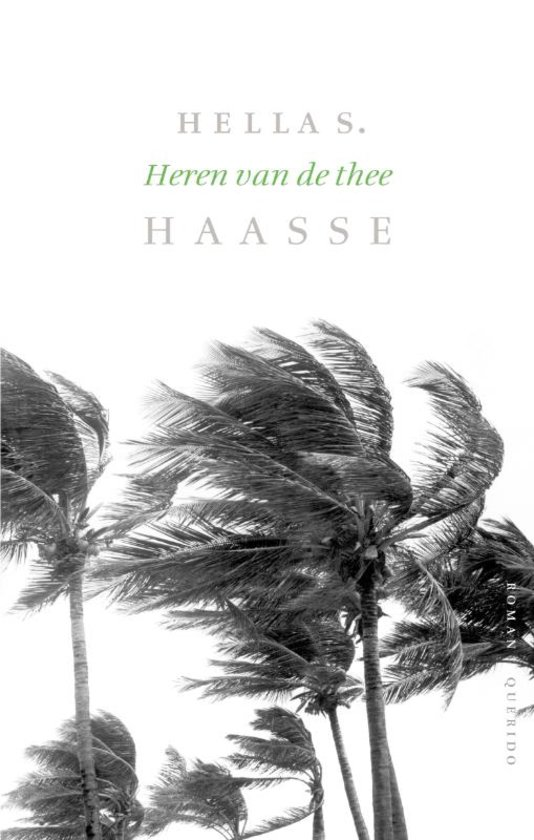

Samenvatting:
Heren van de thee vertelt het levensverhaal van Rudolf Kerkhoven en Jenny Roosegaarde Bisschop. Eind negentiende eeuw trouwt Jenny na enige aarzeling met Rudolf en komt zij te wonen op de afgelegen theeonderneming Gamboeng in de Preanger op Java. In het decor van de indrukwekkende, mysterieuze natuur en tegen de achtergrond van de ontwikkelingen in de koloniale politiek, leven we mee met de autocratische ondernemer Rudolf en zijn langzaam verbitterd rakende echtgenote. 